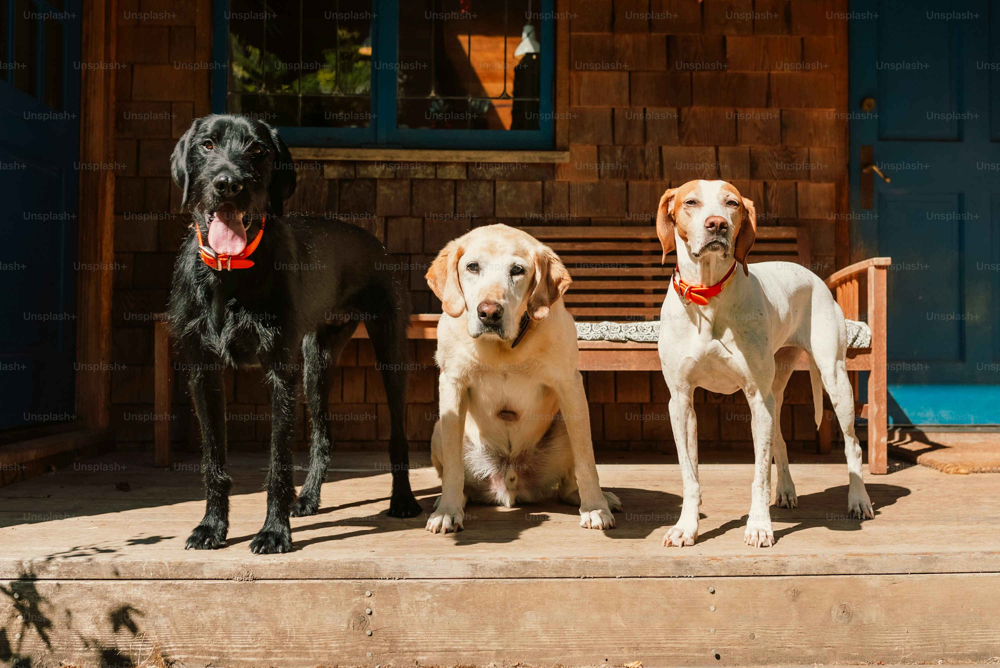

About Us
Discover the fascinating world of dogs and learn about our passion for these incredible animals.

Friendly and outgoing, Labradors are known for their loyalty and playful nature.

Intelligent and versatile, German Shepherds are great working dogs and loyal companions.

Known for their distinctive wrinkled face and muscular build, Bulldogs are calm and friendly.